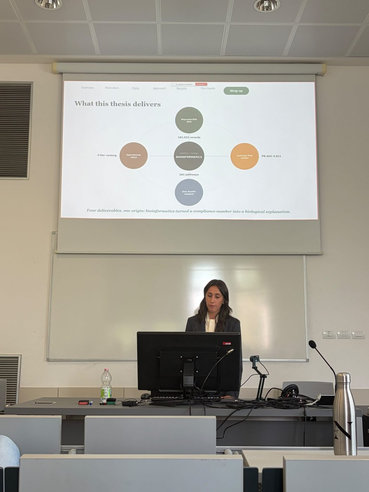

MSc Thesis
Thesis work developed in the context of my MSc path and internship at Neotron, focusing on data-driven decision support and reproducible analytical workflows.
Thesis work developed in the context of my MSc path and internship at Neotron, focusing on data-driven decision support and reproducible analytical workflows.
24 September 2026 · University of Bologna · 110/110 cum laude
The defence closed on four deliverables: a reproducible decision support system built on 182,033 laboratory records, a leakage-free risk model (test PR-AUC 0.81), a four-tier risk ranking for daily laboratory use, and a One Health readout linking priority contaminants to 263 biological pathways.

The thesis is tightly connected to my internship at Neotron: real laboratory context, real constraints, and emphasis on reliability, traceability and communication of results.